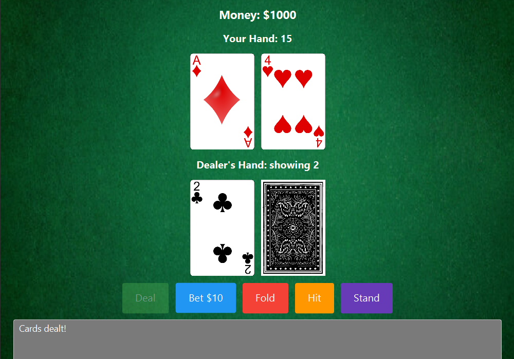

Coding Projects
Card Challender

A group coding project done in CS 371, the project was done in collaboration with four fellow classmates including myself, making us a five person development team. The decided project was a card game with 2d elements that are found in popular titles such as Pokemon, Stardew Valley, and other popular titles of the 2d, pixel art aesthetic.

Card Challenger is centered around the goal of playing card games with NPCs spread out across the map. The games included poker, blackjack, and a dice rolling game. As with any gambling type game, the player's goals is to come out with the strongest hand against the NPC. Most of the games were coded and developed by member, Richard. Elements related to in game UI and menus were done by member Dael. Map rendering and further game components were done by member Jacob. Art related to world and NPCs were originally designed by member Nick.
My role in the group was to implement NPC interactions. This included being able to walk up to an NPC and initiate an interaction that will then start the game subsequently. Further, I implemented some methods related to gameplay such as a dialogue box UI, game states that indicate when the game is in either a play state, paused, or in dialogue. The game is still currently a work in progress and more development will be done over the coming year to expand more on playable games, a functioning gambling AI to improve player experience by simulating some sense of immersion in games such as poker, improve NPC interactions so that they may properly handle launching games and have different interactions at certain points of games, player customization, and potentially a multiplayer system.